RESOLVE
Seemingly simplistic & common place. Bitter n’ sweet.
-
SIZE
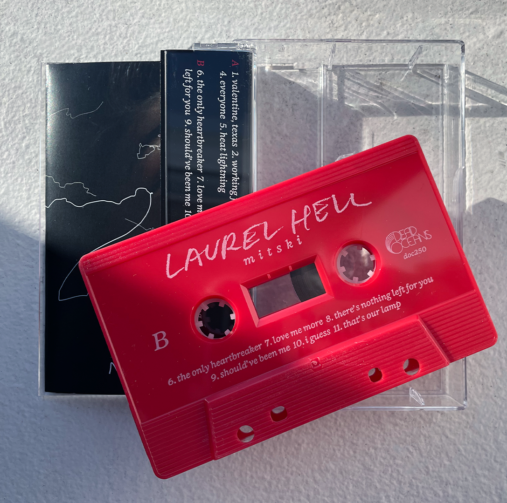
 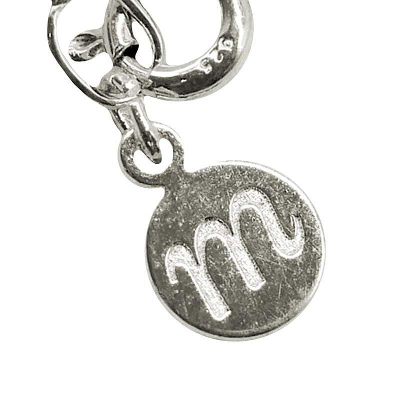
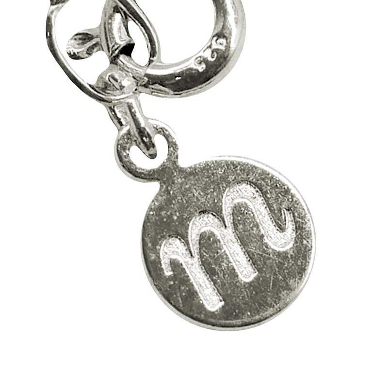
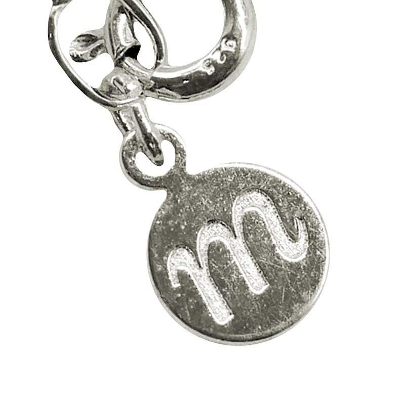
MONOBLOC
Re
-
SIZE

 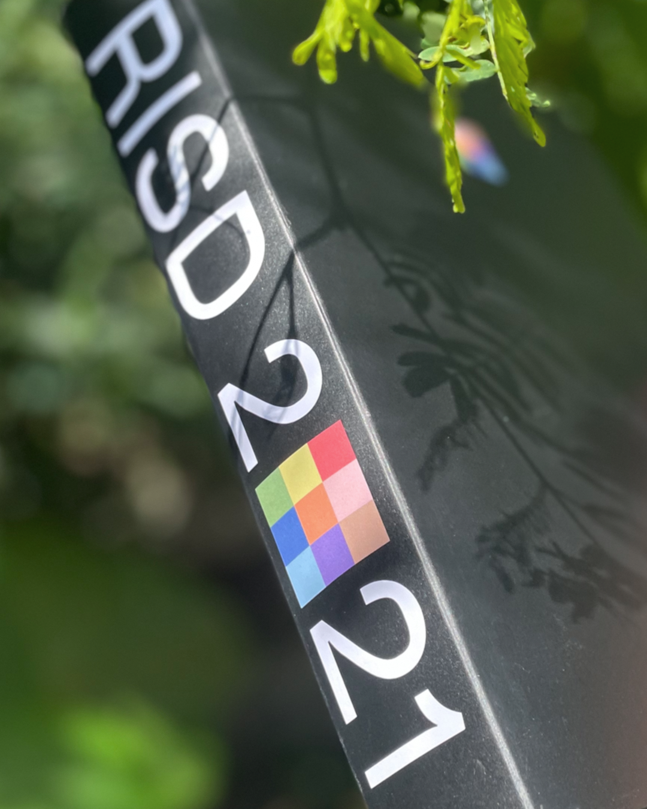
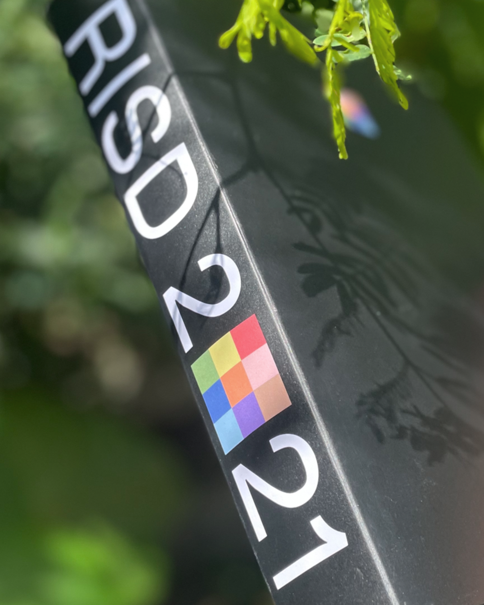
POGI (wip)
based on cursive on cakes but simpler. a very handsome and blobby ting.
-
SIZE
Pogi started off as an inkling of a thought in the beginning stages of designing another typeface (Trickle). It simply was that I would like to make a script typeface that had a less stuffy feeling, one that was a bit friendlier, but not corny y’know.
The thought, like many other thoughts, mainly stayed a thought. Until I was working on a graphic design project and needed type with those characteristics. The thing that truly materialised this design was the fact that I now had a material context that suited the idea to help me restrict the paths I could go. The project required “icing type”. My mind went DING! like an oven with a batch of freshly baked cookies.
On a tight deadline to crunch out the project, I quickly drew the type. Honestly, it was such a blur that I don’t remember most of this. But I do remember writing out sentences really quickly to see what letter frameworks could work best for this.
After the project ended I didn’t pick it back up for about 6 months. When I revisited it I let out an audible oof. Hard to admit, but it was kind of shit. A lot of shifting/improper connections between letters, changing lean angles, inconsistencies in weight, blah blah... I could go on forever. So I right now I'm in the process of redrawing everything and adding more.
This is where Pogi is at right now. Stay tuned to see where else it goes!
TRICKLE (wip)
nope
-
SIZE
The start of making Trickle began as something fairly different (see Pogi process), but during some sketching it eventually branched off into a distilled question: What if you took a simple skeletal structure and applied a singular rule that completely messed with the whole rhythm of the typeface? It became a road to pure formal manipulation.
What started as a wish to make a script typeface became a bastardisation of the italic form. I took my starting sketches of less formal scripts and started adding rules into their recipes and making new sketches. It took form as different weights and then different contrast models. I eventually landed on a lettering sketch that I found to be quite compelling. This became the foundation of Trickle.
In the lettering the spacing and width of each letter was super tight and the weights were rather inconsistent. To draw the first round of basic letters I eventually distilled everything so that it would work better as a typeface and not stand alone lettering. The established rules became particularly difficult to carry out in the capitals. I had at first drawn them in a swash capital style, but this quickly became way too complicated. So scrap that. From there I had to re-distill the capitals.
And that brings us to our current character set today!
CONSTRUCTION ZONE 2022


A zine exploring the seemingly dangerous future through the lens of chance, fate and precautions.
The zine acts both as a fold up fortune teller and a poster allowing the reader to read their own fate through a non-linear publication.
It consists of hand lettering, collaged photography and illustrations.
Printed as a 4 colour Risograph print.
DESIGN, ILLUSTRATION, & LETTERING
80KM/H RUG 2022
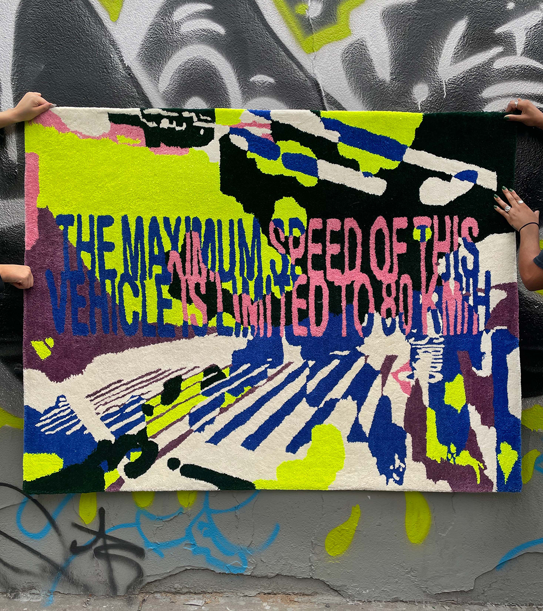

4 x 5.25 ft commissioned cut-pile rug designed to be a bold intervention in a living space.
It is an abstraction of previous spaces mushed together into an indistinguishable cacophony, much like a memory.
DESIGN & FABRICATION
KILDER “UNEARTH” 2022


Album and singles designs for Kilder’s LP “UNEARTH”.
Visualising the act of digging through the notation language of excavation sites as a metaphor for unveiling the multiplicitous textures of his music.
The lettering pulls from the textural qualities of engraved letters in stone to evoke the feeling of chipping away at rock.
CREATIVE DIRECTION: Kilder & Corinne Ang
DESIGN & LETTERING: Corinne Ang
PHOTOGRAPHY: Jasper Cable-Alexander
CJ TYPE @ TYPOGRAPHICS 2022


Embodying CJ Type’s lively, culturally adventurous and friendly values in a short commercial for Typographics NYC 2022.
In the video CJ Type’s various type families (Dunbar, Louvetter & Pennypacker) travel the world through the lens of food.
It conceptually pulls from the values of the shared plate that originates from CJ’s home state Hawaii, wherein people from all different backgrounds come together to share a meal.
The video was animated through frame by frame animation integrating the many type styles of each typeface and their different features/diacritics.
MOTION & ART DIRECTION: Corinne Ang
AUDIO: CJ Dunn
RISD GD SPRING SPEAKER SERIES 2021
 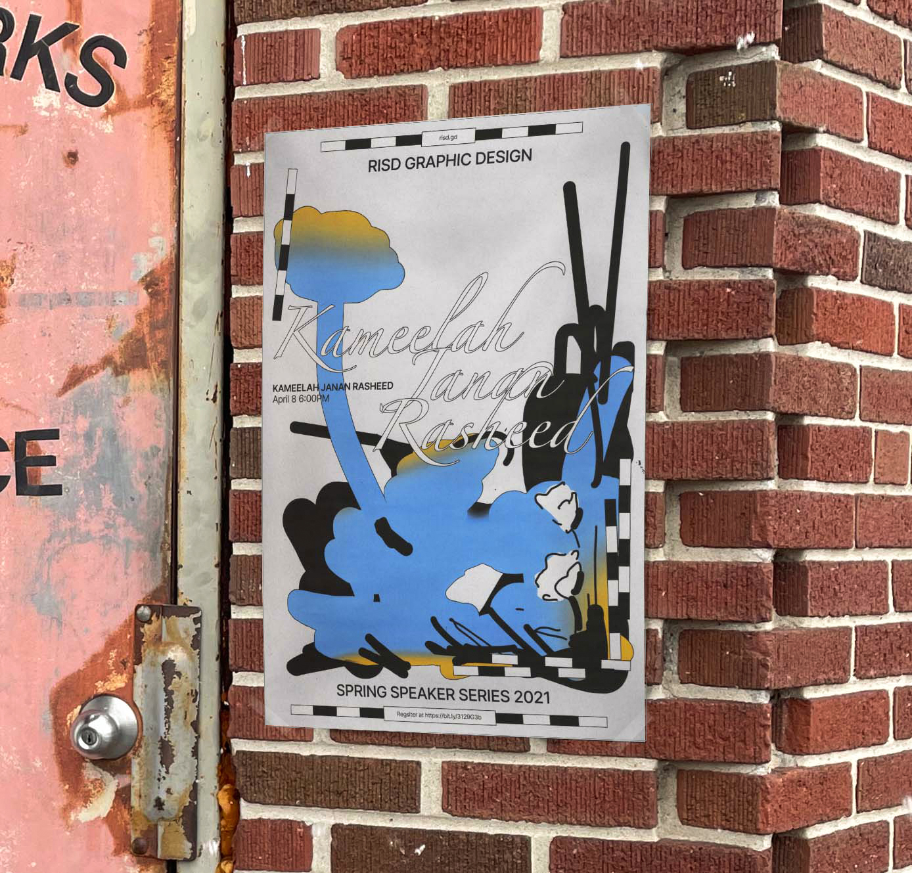
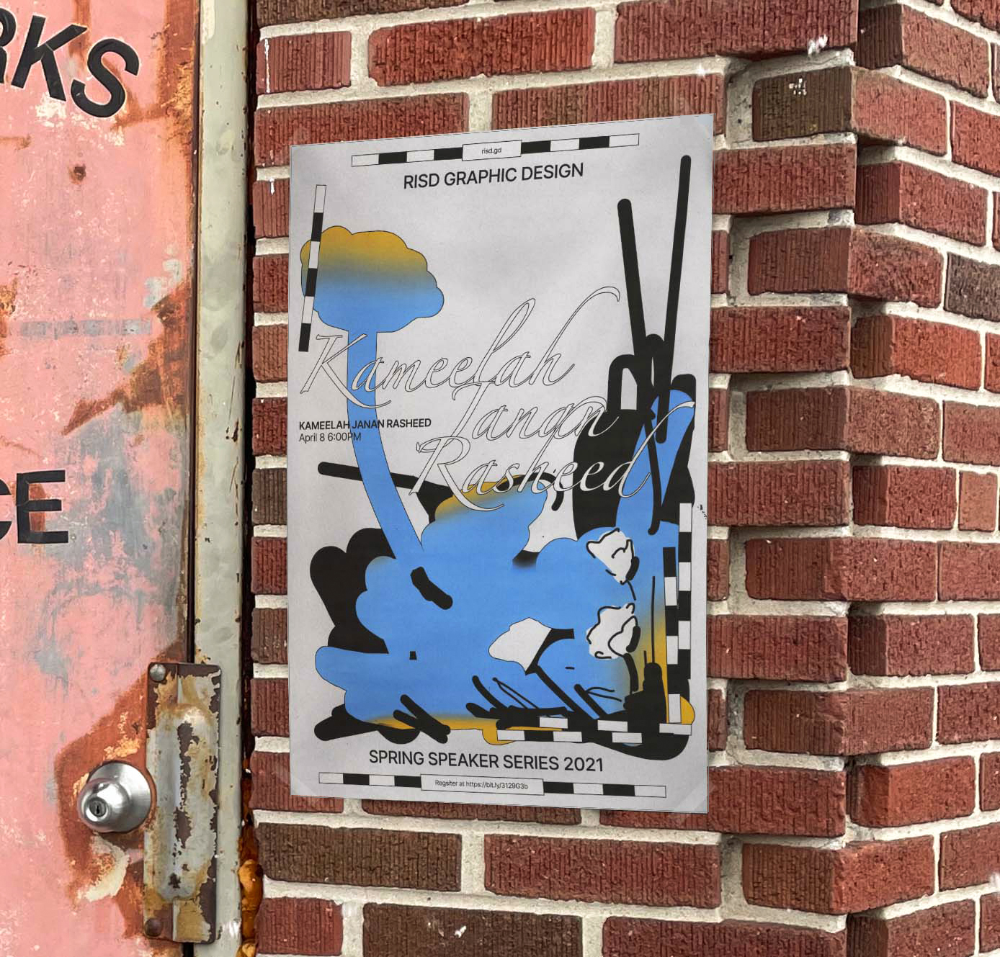
The identity and collateral for RISD Graphic Design’s Spring Lecture Series in the spring of 2021.
The identity thematically plays with the act of planting and cultivating seeds of thought for growth through the knowledge bestowed through the talks.
It plays on the temporal nature of flowers blooming during the spring in correspondence with the timing of the event.
The illustrations pull forms from the flowers of each of the speaker’s home city and current location.
DESIGN, ILLUSTRATION & ANIMATION
PASSING BY, PRESSING ON, MOVING FORWARDS 2021


A hand drawn frame-by-frame flip book exploring the commute as an allegory for growing up and moving between many places while watching time and space pass by in a blur.
Printed on the Risograph with 4 colours.
MOTION, PUBLICATION DESIGN & PRINTING
RISD YEARBOOK 2021


 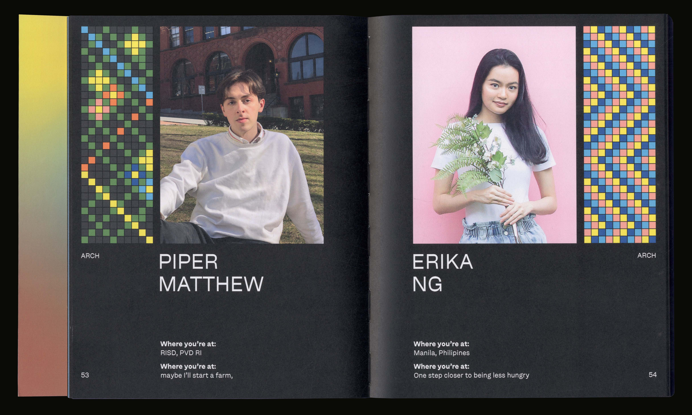
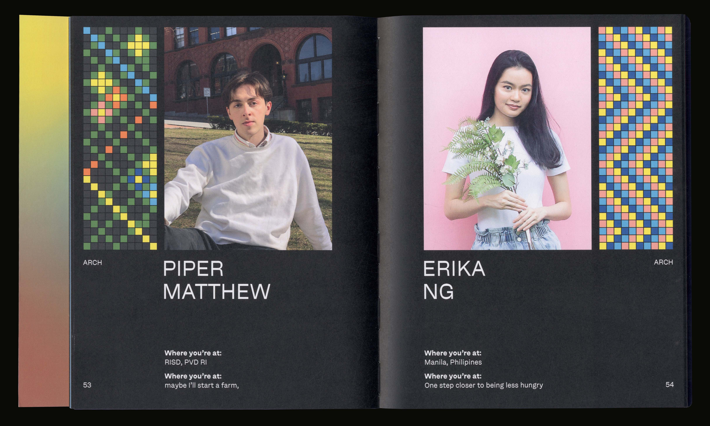
Publication design for the Rhode Island School of Design's yearbook for the class of 2021.
It acts as the final physical gathering of the RISD class of 2021.
A book that celebrates a senior class pushing their artistic practices both in person and online.
It displays the individual interests of each student through pixel drawings they made and portraits they provided.
DESIGN: Corinne Ang, Julie Alter, Baijun Chen, Labelle Chang, Leo Horton, Madi Ko, Soleil Singh, Amanda Yang
CONCEPT: Corinne Ang
POINTS OF INFLECTION 2021


Creating the identity, leading design and organizing a team to create collateral and carry out curation for RISD Graphic Design Senior Show (2021).
By looking at how 2020/2021 was a turning point in historical & cultural matters and in our personal lives,
Points of Inflection focuses on the way that we shape our paths and make connections (utilizing the physical manipulation of tape as a metaphor for this).
The tape makes a reappearance in the form of tape paths created by each participating student that connect throughout the identity.
Displayed at Woods Gerry Gallery from March 19–23 2021.
Visit poi.risd.gd to read more and see an archive of the displayed works.
Displayed at Woods Gerry Gallery from March 19–23 2021.
Visit poi.risd.gd to read more and see an archive of the displayed works.
DESIGN LEAD: Corinne Ang
MOTION: Julia Chu
BARANGAY 2020/21


An exploration into the cultural standpoint in designing typography resulting in two typefaces (Monobloc and Fluoral) and a physical exhibition.
A barangay is the Filipino equivalent of a village.
If it takes a village to raise a child then the many stories of our past also become families in a village that shapes us.
In Barangay multiple typographic families are grown out of my intertwining narratives and they come together to tell the story of my upbringing as a Filipino-Chinese third culture kid.
Installed at RISD Graphic Design Commons from January 2021–March 2021.
Installed at RISD Graphic Design Commons from January 2021–March 2021.
TYPE DESIGN & EXHIBIT DESIGN
HAUNTED 2020


A photo series developed and printed in the darkroom and compiled into a zine exploring Providence’s spooky history.
The photos act as a response to H.P. Lovecraft’s The Shunned House where an uncle and nephew investigate a haunted house in Providence.
The zine intertwines an exploration at 3 of Providence’s haunts at night with friends and the beginning narrative of The Shunned House.
PUBLICATION DESIGN (PRINT & WEB)